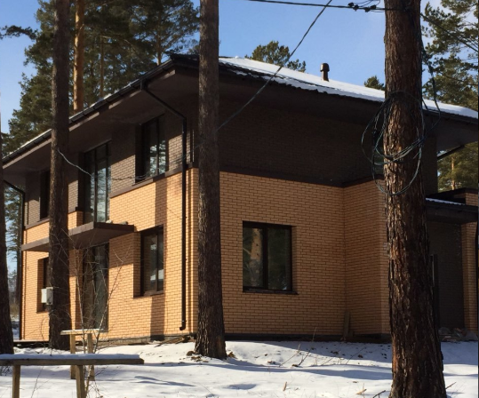
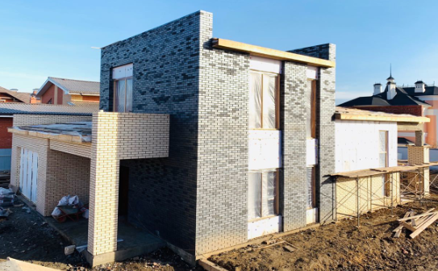
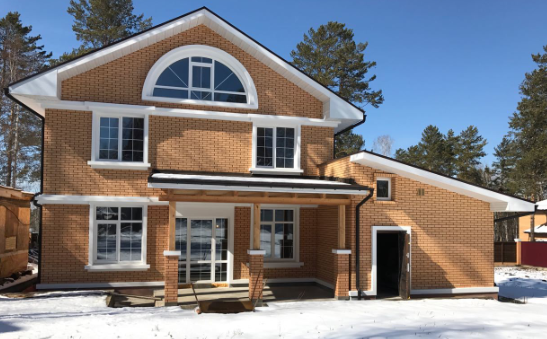
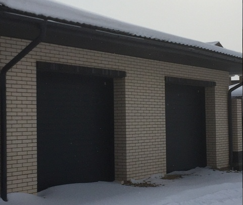
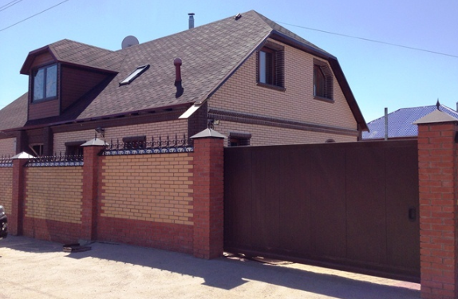
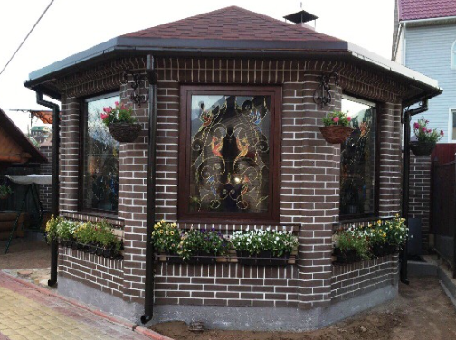

НАШИ ПРОЕКТЫ И ПОСТАВКИ
💻 АРХИТЕКТУРНАЯ ВИЗУАЛИЗАЦИЯ, РАЗРАБОТКА МАКЕТОВ И КОМПЛЕКТАЦИЯ ОБЪЕКТОВ МАТЕРИАЛАМИ
💻 АРХИТЕКТУРНАЯ ВИЗУАЛИЗАЦИЯ, РАЗРАБОТКА МАКЕТОВ И КОМПЛЕКТАЦИЯ ОБЪЕКТОВ МАТЕРИАЛАМИ
Живые фотографии готовых домов из нашего кирпича. Листайте галерею влево и вправо.






⭐ ЧИТАЙТЕ НАСТОЯЩИЕ ОТЗЫВЫ НА НЕЗАВИСИМЫХ ПЛОЩАДКАХ И ОСТАВЛЯЙТЕ СВОЁ МНЕНИЕ
«Заказывал тут Старооскольский кирпич цвета слоновая кость. Переживал за доставку, но приехало всё в идеале. Отдельный респект за бесплатное хранение на складе: оплатил зимой по скидке, а забрал в июне!»
«Постоянно сотрудничаем с Центром Кирпича по снабжению объектов. Нам как профессионалам важны четкие сроки. Для крайнего объекта брали Железногорский ригель. Качество на высоте, геометрия ровная.»
«Решили облицевать дом немецким клинкером Recke. Объездили весь город, лучшие образцы и нормальный ценник нашли только здесь. Менеджеры помогли разложить цвета на 3D-макете фасада бесплатно, вышло супер!»
«Работаю со многими поставщиками Иркутска, но в Центр Кирпича обращаюсь, когда нужен сложный расчет смет под кирпич Modformat или фигурные элементы фасада. Просчитывают до штуки, ни одного лишнего поддона.»